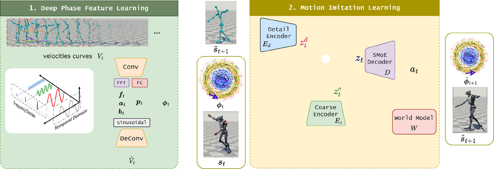
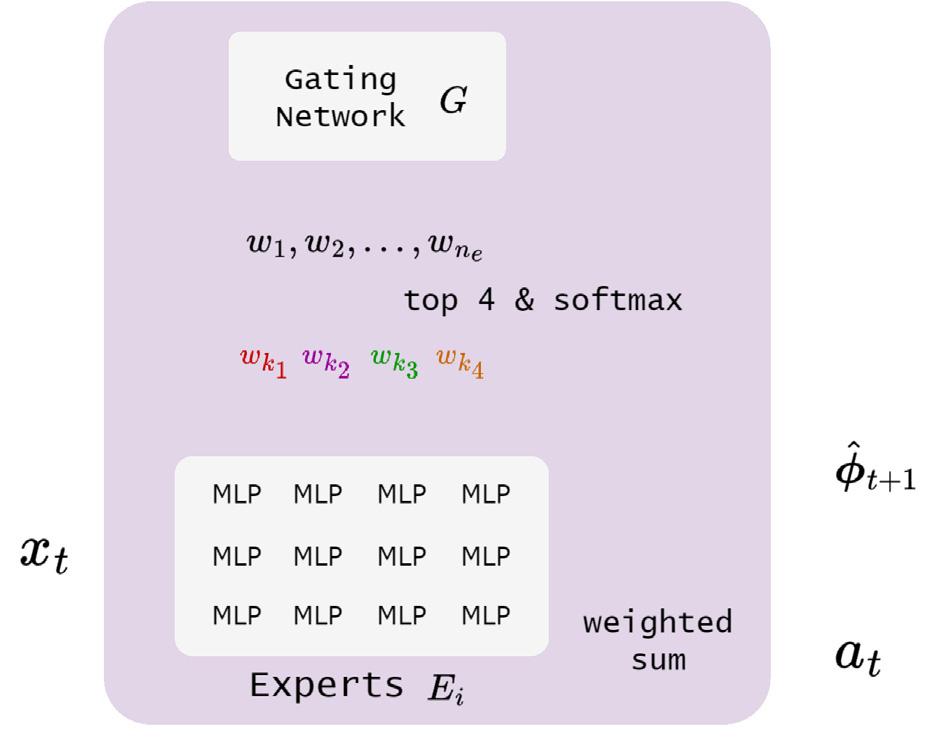
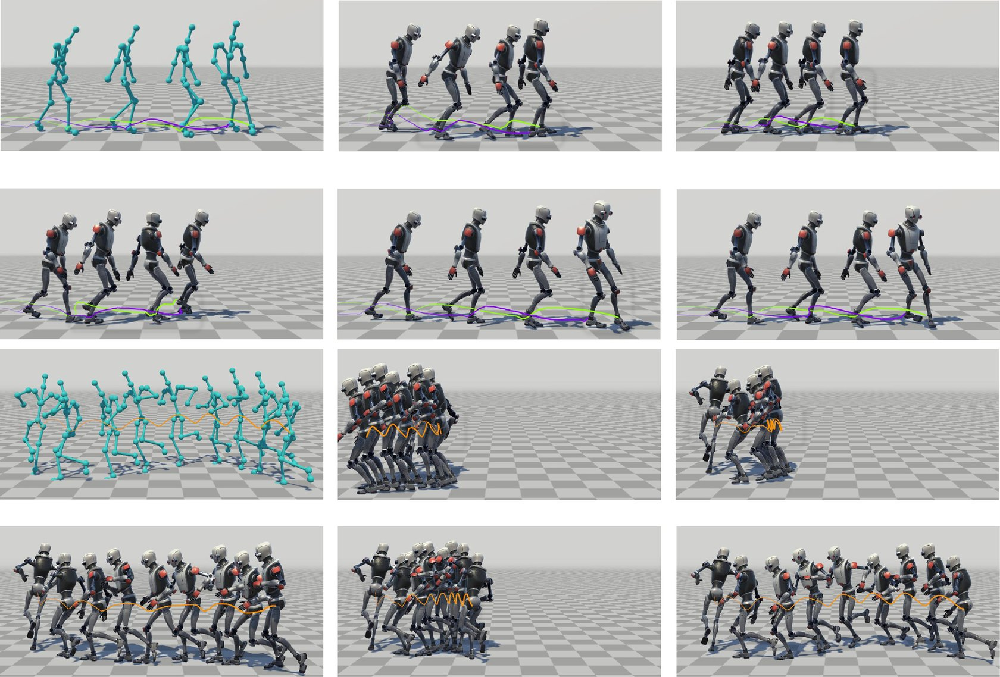
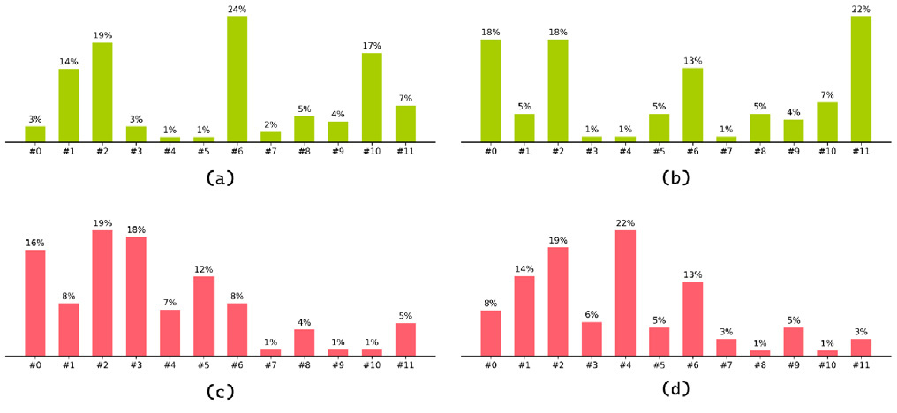
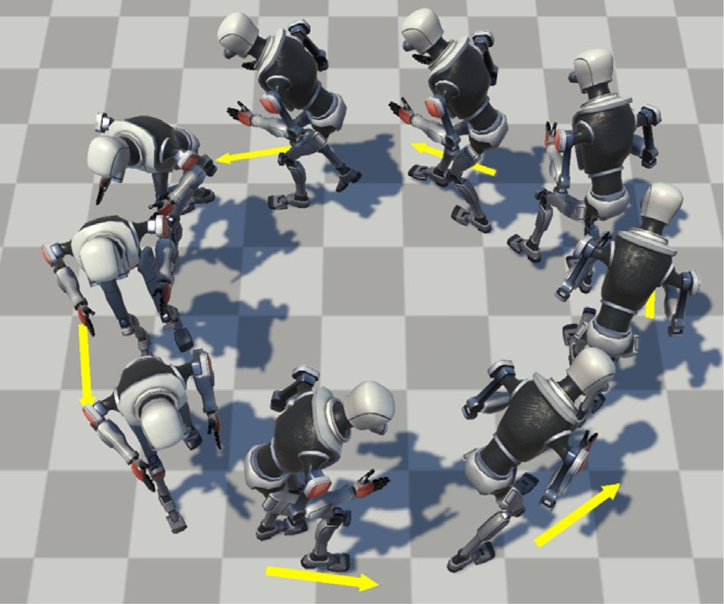

Journal paper · Computers & Graphics 2025
A physics-based character controller that injects deep phase features — learned by a periodic autoencoder — into a sparse mixture-of-experts policy, and adds a detail encoder that recovers high-frequency motion from the reference target state. It reaches state-of-the-art tracking accuracy while holding real-time inference cost.
Two stages: learn deep phase features from motion, then imitate reference motion with a phase-conditioned controller.

The abstract as published.
In this work, we introduce PhaseTrack, a novel phase-guided physics-based motion tracking method that enhances motion generation quality by leveraging deep phase features learned from a periodic autoencoder. PhaseTrack employs a novel integration of phase-conditioned sparse mixture of experts and hierarchical encoder–sparse mixture of experts architecture conditioned on phase features within a world model framework, enabling the effective extraction of information from highly abstract phase representations without compromising real-time inference performance. Additionally, we propose a detail encoder that captures high-frequency motion details from reference target states, ensuring the realism of the generated motions. Our comprehensive evaluations demonstrate that PhaseTrack outperforms state-of-the-art model-based motion tracking methods in terms of precision and motion fidelity.
Phase conditioning inside a world-model framework, plus a dedicated path for high-frequency detail.
The periodic autoencoder takes velocities Vt over a sliding window of length T and passes them through convolution layers and a differentiable FFT layer, yielding amplitudes at, offsets bt and frequencies ft; a fully-connected branch predicts the phase shift pt. These parameters reconstruct the velocity features, and the resulting features φt summarise the spatio-temporal dynamics of the motion — the conditioning signal used by the controller.
The policy predicts an action from the current state, the phase feature and the next reference frame. It is supervised through a differentiable world model, so the imitation objective becomes a distance between target and predicted states — this is what keeps training sample-efficient and lets the controller transfer across simulators.
Maps the character state together with the deep phase feature to a coarse latent code, using 3 linear layers with hidden size 512.
E_c( φ_t, s_t ) → z^c_tPhase features cannot carry non-periodic detail, so a second encoder reads the reference target frame and produces a complementary code.
E_d( s~_t+1, z^c_t ) → z^d_t12 experts, 4 activated per sample through a sparsity-and-softmax gate. A larger expert pool without the inference cost of activating all of it.
z_t = z^c_t + z^d_tEstimates the next state during training; at inference the physical simulator executes the policy and tracks the target state.
ŝ_t+1 = W( s_t, a_t )
| Simulator | ODE with PD control; 120 Hz simulation, 20 Hz policy |
|---|---|
| Motion data | LaFAN and AMASS, interactive motions excluded, retargeted to the simulated character |
| PAE training | AdamW, lr 10−4, batch 32, 100 epochs (about 1 day) |
| Policy + world model | RAdam, lr 10−5 / 10−3, batches 2048 / 512, 20k iterations (about 7 days) |
| Network | Latent code 256-d, hidden size 512, GELU with dropout 0.1, 12 experts (4 active) |
| Hardware | NVIDIA RTX 3090, Intel i9-13900K |
Locomotion (100STYLE) and non-locomotion (DFaust) tracking, against world-model baselines and phase-augmented versions of them.
| Method | DFaust MPJPE | DFaust PAMPJPE | 100STYLE MPJPE | 100STYLE PAMPJPE |
|---|---|---|---|---|
| SuperTrack | 67.64 | 6.70 | 158.22 | 6.27 |
| PhysicsVAE | 76.92 | 24.79 | 201.25 | 37.74 |
| ControlVAE | 76.77 | 29.72 | 200.57 | 39.30 |
| MoconVQ | 45.27 | 5.67 | 160.01 | 7.70 |
| SuperTrack + phase | 65.12 | 6.22 | 155.13 | 6.07 |
| PhysicsVAE + phase | 73.22 | 26.81 | 202.33 | 33.14 |
| ControlVAE + phase | 72.34 | 23.53 | 199.32 | 37.32 |
| MoconVQ + phase | 46.47 | 5.96 | 163.47 | 7.52 |
| PhaseTrack (ours) | 41.60 | 3.41 | 151.26 | 3.24 |
Table 2 of the paper. Lower is better on both metrics.

| Method | FLOPs (M) | Params (M) |
|---|---|---|
| SuperTrack | 32.5 | 16.2 |
| PhysicsVAE | 33.2 | 16.9 |
| ControlVAE | 34.7 | 17.3 |
| MoconVQ | 35.5 | 57.1 |
| PhaseTrack (ours) | 32.3 | 41.5 |
Table 1 of the paper. The accuracy comes without paying extra inference compute.
| Variant | DFaust MPJPE | DFaust PAMPJPE | 100STYLE MPJPE | 100STYLE PAMPJPE |
|---|---|---|---|---|
| w/o phase | 50.64 | 5.02 | 158.10 | 6.14 |
| w/o detail encoder | 68.73 | 9.19 | 171.34 | 9.73 |
| combined encoder | 41.57 | 3.49 | 153.56 | 4.29 |
| full | 41.60 | 3.41 | 151.26 | 3.24 |
Table 3 of the paper. Dropping the detail encoder hurts most; keeping the two encoders separate edges out a single shared one.

PhaseTrack also works as the low-level controller under a high-level motion-matching loop.

Please cite the published version.
@article{zheng2025phasetrack,
title = {PhaseTrack: Physics-based motion tracking via phase-guided motion generation},
author = {Zheng, Ruikun and Mou, Chengjie and Hu, Ruizhen},
journal = {Computers & Graphics},
volume = {132},
pages = {104333},
year = {2025},
doi = {10.1016/j.cag.2025.104333}
}
Full text: official version on ScienceDirect (subscription). Ruikun Zheng and Chengjie Mou contributed equally; Ruizhen Hu is the corresponding author. This work was supported in part by NSFC (62322207).